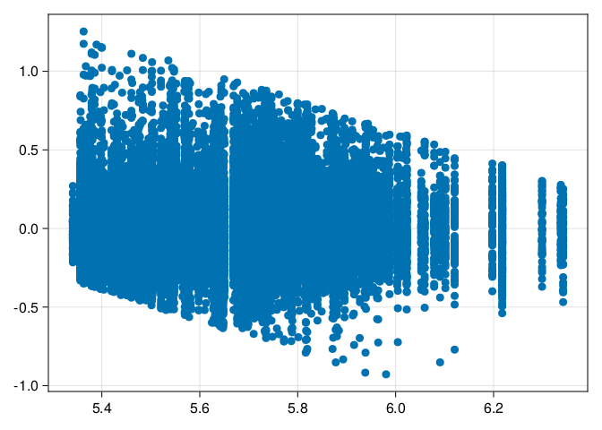
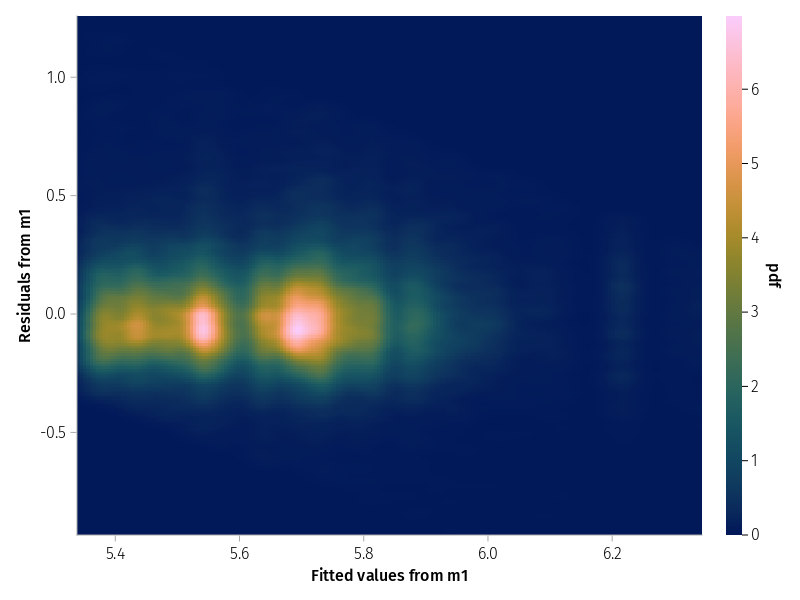
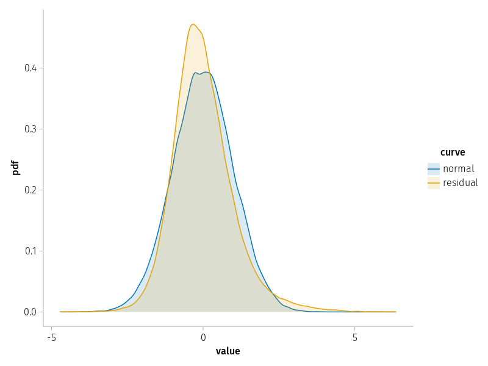
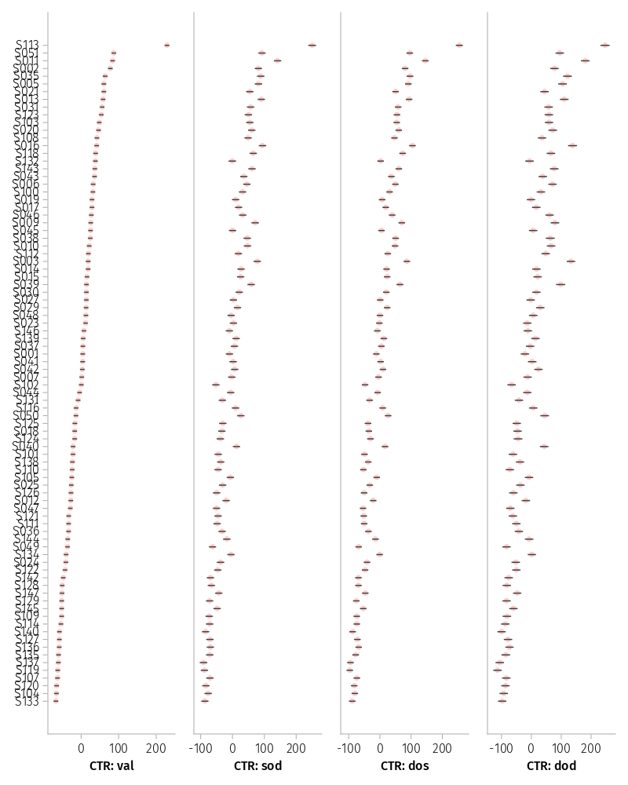

Kliegl et al. (2015) is a follow-up to Kliegl et al. (2010) (see also script mmt_kwdyz11.qmd) from an experiment looking at a variety of effects of visual cueing under four different cue-target relations (CTRs). In this experiment two rectangles are displayed (1) in horizontal orientation , (2) in vertical orientation, (3) in left diagonal orientation, or in (4) right diagonal orientation relative to a central fixation point. Subjects react to the onset of a small or a large visual target occuring at one of the four ends of the two rectangles. The target is cued validly on 70% of trials by a brief flash of the corner of the rectangle at which it appears; it is cued invalidly at the three other locations 10% of the trials each. This implies a latent imbalance in design that is not visiable in the repeated-measures ANOVA, but we will show its effect in the random-effect structure and conditional modes.
There are a couple of differences between the first and this follow-up experiment, rendering it more a conceptual than a direct replication. First, the original experiment was carried out at Peking University and this follow-up at Potsdam University. Second, diagonal orientations of rectangles and large target sizes were not part of the design of Kliegl et al. (2010). To keep matters somewhat simpler and comparable we ignore them in this script.
We specify three contrasts for the four-level factor CTR that are derived from spatial, object-based, and attractor-like features of attention. They map onto sequential differences between appropriately ordered factor levels. Replicating Kliegl et al. (2010), the attraction effect was not significant as a fixed effect, but yielded a highly reliable variance component (VC; i.e., reliable individual differences in positive and negative attraction effects cancel the fixed effect). Moreover, these individual differences in the attraction effect were negatively correlated with those in the spatial effect.
This comparison is of interest because a few years after the publication of Kliegl et al. (2010), the theoretically critical correlation parameter (CP) between the spatial effect and the attraction effect was determined as the source of a non-singular LMM in that paper. The present study served the purpose to estimate this parameter with a larger sample and a wider variety of experimental conditions. Therefore, the code in this script is largely the same as the one in kwdyz.jl.
There will be another vignette modelling the additional experimental manipulations of target size and orientation of cue rectangle. This analysis was reported in the parsimonious mixed-model paper (Bates et al., 2015); they were also used in a paper of GAMMs (Baayen et al., 2017). Data and R scripts are also available in R-package RePsychLing. Here we provide some of the corresponding analyses with MixedModels.jl and a much wider variety of visualizations of LMM results. A MixedModels.jl-based analysis focusing on the complex experimental design and the analysis of a complex random-effect structure for this design is in script kkl15_complex.jl.
We recommend to code the levels/units of random factor / grouping variable not as a number, but as a string starting with a letter and of the same length for all levels/units.
We also recommend to sort levels of factors into a meaningful order, that is overwrite the default alphabetic ordering. This is also a good place to choose alternative names for variables in the context of the present analysis.
The LMM analysis is based on log-transformed reaction times lrt, indicated by a boxcox() check of model residuals. With the exception of diagnostic plots of model residuals, the analysis of untransformed reaction times did not lead to different results.
Comparative density plots of all response times by cue-target relation show the times for valid cues to be faster than for the other conditions.
Figure 1: Compartive density plots of log response time by condition
Boxplots of the mean of log response time by subject under the different conditions show an outlier value under three of the four conditions; they are from the same subject.
dat_subj =combine(groupby(dat, [:Subj, :CTR]),:rt => length =>:n,:rt => mean =>:rt_m,:lrt => mean =>:lrt_m,)describe(dat_subj)
Figure 2: Comparative boxplots of mean response by subject under different conditions
Mean of log reaction times for four cue-target relations. Targets appeared at (a) the cued position (valid) in a rectangle, (b) in the same rectangle cue, but at its other end, (c) on the second rectangle, but at a corresponding horizontal/vertical physical distance, or (d) at the other end of the second rectangle, that is \(\sqrt{2}\) of horizontal/vertical distance diagonally across from the cue, that is also at larger physical distance compared to (c).
We remove the outlier subject and replot, but we model the data points in dat and check whether this subject appears as an outlier in the caterpillar plot of conditional modes.
Figure 3: Comparative boxplots of mean response by subject under different conditions without outlier
A better alternative to the boxplot is often a dotplot, because it also displays subjects’ condition means.
To be done
For the next set of plots we average subjects’ data within the four experimental conditions. This table could be used as input for a repeated-measures ANOVA.
We can also look at correlations plots based on the four condition means. There are actually two correlation matrices which have correspondences in alternative parameterizatios of the LMM random-effect structure. One matrix is based on the four measures. If you think of the four measures as test scores, this matrix is the usual correlation matrix. The second matrix contains correlations between the Grand Mean (GM) and the three effects defined with the contrasts for the four levels of the condition factor in the next chunk.
To this end, we
use the unstack() command to convert data from long to wide format,
compute the GM and the three experimental effects.
plot the correlation matrix for four measures/scores, and
plot the correlation matrix for GM and three effects
Two of the theoreticsally irrelevant within-subject effect correlations have a different sign than the corresponding, non-significant CPs in the LMM; they are negative here, numerically positive in the LMM. This occurs only very rarely in the case of ecological correlations. However, as they are not significant according to shortest coverage interval, it may not be that relevant either. It is the case both for effects based on log-transformed and raw reaction times.
Principal components based on correlation matrix
(Intercept) 1.0 . . .
CTR: sod 0.56 1.0 . .
CTR: dos -0.05 0.8 1.0 .
CTR: dod 0.6 0.66 0.36 1.0
Normalized cumulative variances:
[0.6326, 0.9136, 1.0, 1.0]
Component loadings
PC1 PC2 PC3 PC4
(Intercept) -0.41 0.66 -0.47 0.42
CTR: sod -0.6 -0.18 -0.34 -0.7
CTR: dos -0.43 -0.69 -0.07 0.58
CTR: dod -0.53 0.25 0.81 -0.0
We note that the critical correlation parameter between spatial (sod) and attraction (dod) is now estimated at .66 – not that close to the 1.0 boundary that caused singularity in Kliegl et al. (2010). However, the LMM based on log reaction times is still singular. Let’s check for untransformed reaction times.
For untransformed reaction times, we see the model is not singular.
Diagnostic plots of LMM residuals
Do model residuals meet LMM assumptions? Classic plots are
Residual over fitted
Quantiles of model residuals over theoretical quantiles of normal distribution
Residual-over-fitted plot
The slant in residuals show a lower and upper boundary of reaction times, that is we have have too few short and too few long residuals. Not ideal, but at least width of the residual band looks similar across the fitted values, that is there is no evidence for heteroskedasticity.
Code
scatter(fitted(m1), residuals(m1))

Figure 4: Residuals versus fitted values for model m1
With many observations the scatterplot is not that informative. Contour plots or heatmaps may be an alternative.
Code
set_aog_theme!()draw(data((; f=fitted(m1), r=residuals(m1))) *mapping(:f =>"Fitted values from m1", :r =>"Residuals from m1" ) *density();)

Figure 5: Heatmap of residuals versus fitted values for model m1
Q-Q plot
The plot of quantiles of model residuals over corresponding quantiles of the normal distribution should yield a straight line along the main diagonal.
Code
qqnorm(m1; qqline=:none)
Figure 6: ?(caption)
Code
qqnorm(m1_rt; qqline=:none)
Figure 7: ?(caption)
Observed and theoretical normal distribution
The violation of expectation is again due to the fact that the distribution of residuals is narrower than expected from a normal distribution. We can see this in this plot. Overall, it does not look too bad.
Code
let n =nrow(dat) dat_rz = (; value=vcat(residuals(m1) ./std(residuals(m1)), randn(n)), curve=repeat(["residual", "normal"]; inner=n), )draw(data(dat_rz) *mapping(:value; color=:curve) *density(; bandwidth=0.1); )end

Figure 8: Kernel density plot of the standardized residuals for model m1 versus a standard normal
Figure 9: Prediction intervals of the subject random effects in model m1
When we order the conditional modes for GM, that is (Intercept), the outlier subject S113 becomes visible; the associated experimental effects are not unusual.
Figure 10: Prediction intervals of the subject random effects in model m1 ordered by mean response
The catepillar plot also reveals that credibilty intervals are much shorter for subjects’ Grand Means, shown in (Intercept), than the subjects’ experimental effects, because the latter are based on difference scores not means. Moreover, credibility intervals are shorter for the first spatial effect sod than the other two effects, because the spatial effect involves the valid condition which yielded three times as many trials than the other three conditions. Consequently, the spatial effect is more reliable. Unfortunately, due to differences in scaling of the x-axis of the panels this effect must be inferred. One option to reveal this difference is to reparameterize the LMM such model parameters estimate the conditional modes for the levels of condition rather than the contrast-based effects. This is accomplished by replacing the 1 in the random effect term with 0, as shown next.
The caterpillar plot for levels shows the effect of the number of trials on credibility intervals; they are obviously much shorter for the valid condition. Note that this effect is not visible in a repeated-measure ANOVA with four condition means per subject as input.
Code
@chain m1L begin ranefinfo onlycaterpillar!(Figure(; resolution=(800, 1000)), _; orderby=1)end

Figure 11: Prediction intervals of the subject random effects in model m1L
Figure 12: Shrinkage plots of the subject random effects in model m1L
Three of the CPs are imploded, but not the theoretically critical ones. These implosions did not occur (or were not as visible) for raw reaction times.
Figure 18: Kernel density estimate from bootstrap samples of the standard deviations for model m1L
Three CPs stand out positively, the correlation between GM and the spatial effect, GM and attraction effect, and the correlation between spatial and attraction effects. The second CP was positive, but not significant in the first study. The third CP replicates a CP that was judged questionable in script kwdyz11.jl.
The three remaining CPs are not well defined for log-transformed reaction times; they only fit noise and should be removed. It is also possible that fitting the complex experimental design (including target size and rectangle orientation) will lead to more acceptable estimates. The corresponding plot based on LMM m1_rt for raw reaction times still shows them with very wide distributions, but acceptable.
References
Baayen, H., Vasishth, S., Kliegl, R., & Bates, D. (2017). The cave of shadows: Addressing the human factor with generalized additive mixed models. Journal of Memory and Language, 94, 206–234. https://doi.org/10.1016/j.jml.2016.11.006
Kliegl, R., Kushela, J., & Laubrock, J. (2015). Object orientation and target size modulate the speed of visual attention. Department of Psychology, University of Potsdam.
Kliegl, R., Wei, P., Dambacher, M., Yan, M., & Zhou, X. (2010). Experimental effects and individual differences in linear mixed models: Estimating the relationship between spatial, object, and attraction effects in visual attention. Frontiers in Psychology. https://doi.org/10.3389/fpsyg.2010.00238